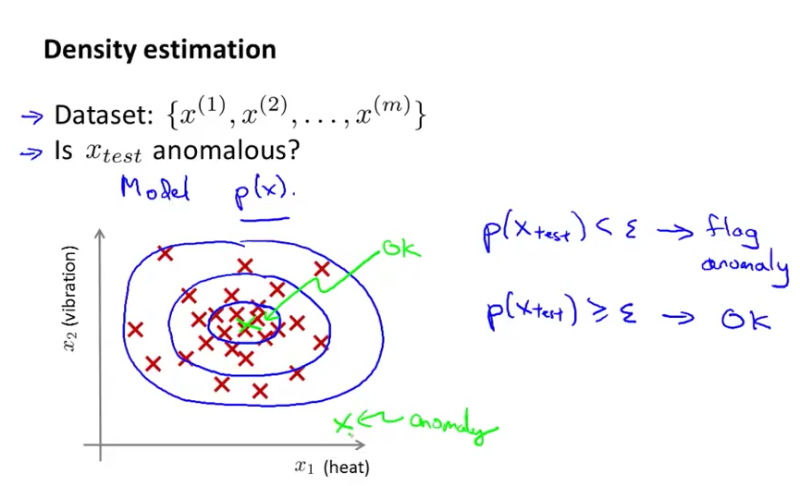
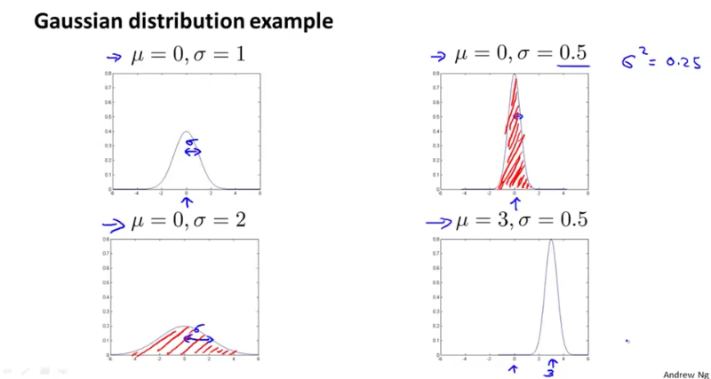
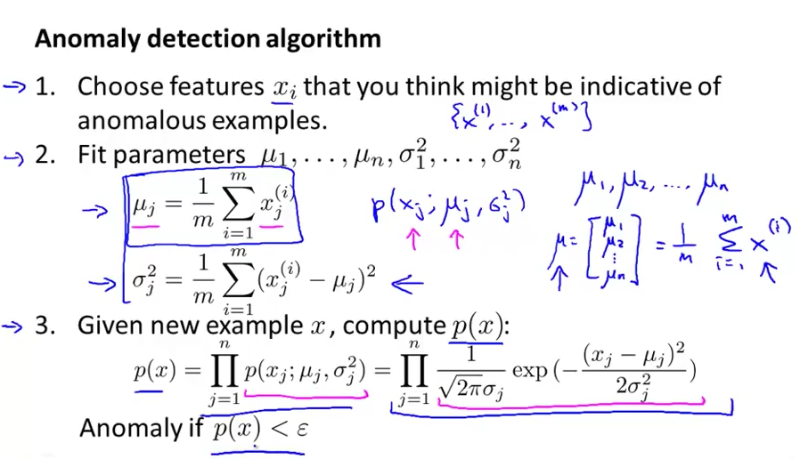
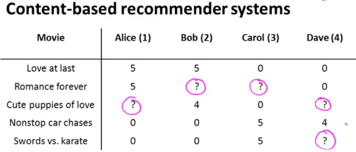

This week’s machine learning course is about Anomaly Detection and Recommender Systems.
What is Anomaly Detection?
Given a bunch of x’s (where each x is a vector - a training example), detect whether for a new example x (a new vector), possibility p(x) < ε (epsilon). If yes, it is considered an anomaly; otherwise, it is considered normal.

What is Gaussian (Normal) distribution?
Gaussian distribution is defined as X ~ N(μ, σ^2), where μ (pronounced mu) is the mean of x; σ (pronounced sigma) is the standard deviation; σ^2 is the variance.

Anomaly Detection Algorithm
p(x;μ,σ^2) uses Gaussian distribution to plot the function of x for given a fixed value of mu and of sigma squared.

Recommender Systems: Collaborative Filtering Algorithm
Collaborative Filtering Algorithm is based on linear regression. We can think of each movie has its features: x1, x2, …, xn. x1 may represent how romance the movie is, x2 may represent how action the movie is, etc. Then if the user has rated enough movies ( 1<= the rating y <= 5), we can use linear regression to predict hθ(x), given the features of a movie.

Learning features
Not only we can learn the thetas of each user, we can even learn the value of features of each movie automatically by using Collaborative Filtering Algorithm.
Given a dataset that consists of a set of ratings produced by some users on some movies, you wish to learn the parameter vectors x(1),…,x(nm),θ(1),…,θ(nu) that produce the best fit (minimizes the squared error).